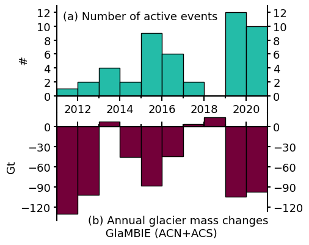

Figure 6 script#
import pandas as pd
import numpy as np
import matplotlib.pyplot as plt
import matplotlib as mpl
from matplotlib.ticker import MultipleLocator
from scipy.stats import pearsonr
# glambie_yrs = [2011, 2012, 2013, 2014, 2015, 2016, 2017, 2018, 2019, 2020]
glambie_yrs = [2010.75, 2011.75, 2012.75, 2013.75, 2014.75, 2015.75, 2016.75, 2017.75, 2018.75, 2019.75]
glambie_acn_mwe = np.array([-0.838284343,
-0.641897238,
0.143996526,
-0.251874668,
-0.597111007,
-0.154672793,
0.115736277,
0.093001923,
-0.523021338,
-0.531392058])
glambie_acs_mwe = np.array([-1.072172128,
-0.866065496,
-0.19463063,
-0.471677225,
-0.653866799,
-0.703323142,
-0.20870379,
0.103721011,
-1.266106631,
-1.061050404])
glambie_acn_gt = np.array([-87.09526543,
-66.64413804,
14.93968716,
-26.11360319,
-61.8628597,
-16.01331433,
11.97371674,
9.614868536,
-54.03343302,
-54.85923231])
glambie_acs_gt = np.array([-43.31408994,
-34.9594575,
-7.8500807,
-19.00888043,
-26.32990754,
-28.29847855,
-8.390471384,
4.166489831,
-50.818418,
-42.55336019])
glambie_acns_gt = glambie_acn_gt + glambie_acs_gt
glambie_acns_gt
array([-130.40935537, -101.60359554, 7.08960646, -45.12248362,
-88.19276724, -44.31179288, 3.58324536, 13.78135837,
-104.85185102, -97.4125925 ])
subglacial_event_acn_yrs = [2016, 2015, 2011, 2015, 2020, 2020, 2015, 2016, 2012, 2020, 2017, 2015,
2020, 2014, 2019, 2020, 2016, 2020, 2019, 2019, 2020, 2019, 2019, 2019, 2016, 2014, 2017, 2019,
2020, 2016, 2013, 2015, 2019, 2015, 2019, 2019]
subglacial_event_acs_yrs = [2013, 2016, 2020, 2012, 2015, 2019,
2021, 2015, 2013, 2013, 2015, 2019, 2020]
# se_bins, se_counts = np.unique(subglacial_event_yrs, return_counts=True)
acn_counts = np.bincount(subglacial_event_acn_yrs)
acn_counts = acn_counts[2011:2021]
acs_counts = np.bincount(subglacial_event_acs_yrs)
acs_counts = acs_counts[2011:2021]
yrs = [2011, 2012, 2013, 2014, 2015, 2016, 2017, 2018, 2019, 2020]
acns_counts = acn_counts + acs_counts
print(acn_counts)
print(glambie_acn)
print(pearsonr(acn_counts[1:], glambie_acn_mwe[1:]))
print(pearsonr(acs_counts[1:], glambie_acs_mwe[1:]))
print(pearsonr(acn_counts[1:] + acs_counts[1:], glambie_acn_mwe[1:] + glambie_acs_mwe[1:]))
print(pearsonr(acn_counts[1:], glambie_acn_gt[1:]))
print(pearsonr(acs_counts[1:], glambie_acs_gt[1:]))
print(pearsonr(acn_counts[1:] + acs_counts[1:], glambie_acn_gt[1:] + glambie_acs_gt[1:]))
print(pearsonr(acn_counts[1:] + acs_counts[1:], glambie_acns_gt[1:]))
[ 1 1 1 2 6 5 2 0 10 8]
[-0.83828434 -0.64189724 0.14399653 -0.25187467 -0.59711101 -0.15467279
0.11573628 0.09300192 -0.52302134 -0.53139206]
PearsonRResult(statistic=-0.6003184771360501, pvalue=0.08741039014185695)
PearsonRResult(statistic=-0.3856880544638436, pvalue=0.30527967722616883)
PearsonRResult(statistic=-0.7443994555228203, pvalue=0.021421501956749883)
PearsonRResult(statistic=-0.5982375050114238, pvalue=0.08880423575256048)
PearsonRResult(statistic=-0.38540962805152373, pvalue=0.3056590040426985)
PearsonRResult(statistic=-0.6929155884856243, pvalue=0.0385159215628941)
PearsonRResult(statistic=-0.6929155884856243, pvalue=0.0385159215628941)
glambie_acns_gt
array([-130.40935537, -101.60359554, 7.08960646, -45.12248362,
-88.19276724, -44.31179288, 3.58324536, 13.78135837,
-104.85185102, -97.4125925 ])
axes_settings = {'linewidth' : 1.5}
mpl.rc('axes', **axes_settings)
font_settings = {'size' : 13}
mpl.rc('font', **font_settings)
bottom = np.zeros(10)
c_eventno = 'xkcd:tealish'
c_masschange = 'xkcd:merlot'
labelx = -0.13
fig, axs = plt.subplots(2, 1, figsize=(5, 4), sharex=True, gridspec_kw={'height_ratios': [1, 1]})
# fig, axs = plt.subplots(3, 1, figsize=(7, 7), sharex=True)
fig.subplots_adjust(hspace=0, left=0.18, right=0.87, top=0.98, bottom=0.1)
acns_h = axs[0].bar(yrs, acns_counts, width=1, align='edge', edgecolor='k', bottom=bottom, color=c_eventno, label='ACS')
# bottom += acs_counts
# acn_h = axs[0].bar(yrs, acn_counts, width=1, align='edge', edgecolor='k', bottom=bottom, color=c_acn, label='ACN')
axs[0].spines["bottom"].set_position(("data", 0))
axs[0].spines["top"].set_visible(False)
axs[0].set_xlim(2011, 2021)
axs[0].set_ylim(-2.5, 13)
axs[0].set_ylabel('#')
axs[0].yaxis.set_label_coords(labelx, 0.5)
ticks_pos_1 = [0, 2, 4, 6, 8, 10, 12]
# axs[1].set_yticks(ticks_pos, labels=[str(i) for i in ticks_pos])
axs[0].set_yticks(ticks_pos_1)
axs[0].xaxis.set_minor_locator(MultipleLocator(1))
axs[0].tick_params(labelbottom=True, right=True, labelright=True, width=1.5)
axs[0].tick_params(axis='x', length=6)
axs[0].tick_params(axis='x', which='minor', width=1.5, length=3)
# axs[0].legend([acn_h, acs_h], ['ACN', 'ACS'])
axs[0].text(0.03, 0.95, '(a) Number of active events', ha='left', va='top', backgroundcolor='w', transform=axs[0].transAxes)
# axs[1].bar(2020, -140, width=1, align='edge', color='xkcd:light grey', hatch='/')
axs[1].bar(yrs, glambie_acns_gt, width=1, align='edge', edgecolor='k', color=c_masschange)
axs[1].set_xlim(2011, 2021)
axs[1].spines["bottom"].set_position(("data", 0))
axs[1].spines["top"].set_visible(False)
# ax.spines["right"].set_visible(False)
axs[1].set_ylim(-140, 20)
axs[1].set_ylabel('Gt')
# axs[1].yaxis.set_label_coords(labelx, 0.15)
ticks_pos_2 = [-120, -90, -60, -30, 0]
# axs[1].set_yticks(ticks_pos_2, labels=[str(i) for i in ticks_pos])
axs[1].set_yticks(ticks_pos_2)
axs[1].tick_params(right=True, labelright=True, labelbottom=False, width=1.5)
axs[1].tick_params(axis='x', direction='in', length=6)
axs[1].tick_params(axis='x', which='minor', direction='in', width=1.5, length=3)
axs[1].text(0.15, 0.05, '(b) Annual glacier mass changes \n GlaMBIE (ACN+ACS)', ha='left', va='top', backgroundcolor='w', transform=axs[1].transAxes)
fig.savefig('frequency_vs_massbalance-v2.pdf', dpi=150)
fig.savefig('frequency_vs_massbalance-v2.png', dpi=150)
